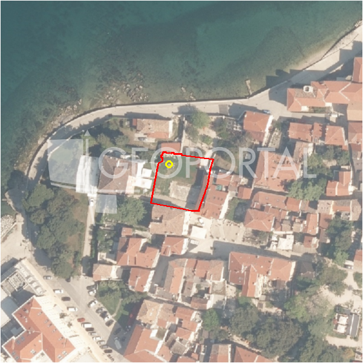

#38100 · Zemljište s dozvolom za dvojnicu-prizemnicu
Poreč, Poreč, Istarska · zemljiste · njuskalo · status active · oglas ↗
Ocjena
- Score
- 61 rule 61 · LLM – · 12.09.2026.
- RLV
- 673.000 € (828 €/m²) · ratio 5,61
- Ukupna investicija
- 1,73 M€
- GBP
- 651 m²
- Feedback
- –
- CRM
- –
Sažetak: Zemljište od 1.128 m² na rubu građevinske zone kod Tinjana (Poreč) s ishođenom građevinskom dozvolom za dvojnicu-prizemnicu (dvije kuće po 74,14 m² neto plus trijem i terasa). Komunalije su plaćene i ugovorene s HEP-om i Vodovodom, a nekretnina se nalazi u slijepoj ulici.
Oglas
- Cijena
- 120.000 € (106 €/m²)
- Površina
- 1.128 m² · DKP 813 m² (odstupanje -27,9 %)
- Prodavatelj
- agencija · Ivamon nekretnine
- Prvi put
- 11.09.2026. · zadnje 11.09.2026. · 0 d na tržištu
Povijest cijene
| Datum | Cijena |
|---|---|
| 11.09.2026. | 120.000 € |
Flagovi
zop_70_100 ZOP pojas 70/100 m (−10)zone_uncertainty zona nije pregledana (reviewed: false) (−5)
llm_pending LLM ekstrakcija/ocjena nedostupna
Komponente score-a
| rlv | {'gbp': 650.528, 'kis': 0.8, 'nkp': 487.896, 'noi': None, 'rlv': 673084.351304348, 'ratio': 5.6090362608695665, 'value': None, 'phases': 1, 'profile': 'obala_visestambeno', 'gdv_neto': 2732217.6, 'cost_soft': 65052.8, 'gdv_bruto': 3415272.0, 'kis_known': False, 'total_inv': 1727498.8800000001, 'cost_build': 1301056.0, 'cost_other': 234190.08000000002, 'cost_sales': 102458.15999999999, 'demolition': False, 'gbp_source': 'kis', 'rlv_per_m2': 827.7391304347829, 'parcel_area': 813.16, 'parcelation': False, 'roi_on_cost': 0.522292992745674, 'profit_at_ask': 902260.5599999999, 'cost_demolition': 0.0, 'total_inv_phase': 1727498.8800000001, 'parcel_area_effective': 813.16, 'sale_price_per_m2_nkp': 7000.0} |
| hard | [] |
| info | ['llm_pending'] |
| rubric | {'permits': {'max': 10.0, 'detail': {'permit': 'gradjevinska'}, 'points': 10.0}, 'physical': {'max': 10.0, 'detail': {'slope_pct': 8.59, 'slope_points': 4.0, 'sea_row1_bonus': True}, 'points': 7.0}, 'liquidity': {'max': 10.0, 'detail': {'n_cuts': 0, 'points_cut': 0.0, 'points_days': 0.03333333333333333, 'seller_type': 'agencija', 'points_fresh': 1.0, 'price_cut_pct': None, 'days_on_market': 1, 'points_private': 0}, 'points': 1.03}, 'rlv_ratio': {'max': 40.0, 'detail': {'rlv': 673084, 'ratio': 5.609, 'asking_price': 120000.0}, 'points': 40.0}, 'zone_quality': {'max': 15.0, 'detail': {'reason': 'zona nepoznata', 'source': 'nepoznato', 'zone_class': None}, 'points': 3.0}, 'price_vs_benchmark': {'max': 15.0, 'detail': {'source': 'auto:Poreč', 'deviation': 0.388, 'ask_eur_m2': 106, 'benchmark_eur_m2': 173.89}, 'points': 14.82}} |
| weights | {'llm': 0.4, 'rule': 0.6, 'model': 0.0} |
| penalties | {'zop_70_100': 10, 'zone_uncertainty': 5} |
| raw_score | 75,8 |
| rlv_notes | [] |
| flag_notes | {'zop_band': '70', 'total_inv': 1727499, 'zone_code': None, 'zone_class': None, 'zone_source': 'nepoznato', 'zone_reviewed': None} |
| caps_applied | [] |
GIS
- Čestica
- k.o. 323748, k.č. 10/3 (pin_buffer, 0,76); k.o. 323748, k.č. 18 (pin_buffer, 0,76); k.o. 323748, k.č. 6077 (pin_buffer, 0,75)
- Zona
- – (–)
- kig / kis / katnost
- – / – / –
- GP / UPU
- – · UPU –
- Pristup / nagib
- unknown · 8,6 % (max 16,6 %)
- More
- 27 m · red 1 · ZOP 70
- Zaštite
- Natura ne · zaštićeno ne · kulturno dobro ne
- Zgrade na čestici
- 0 %
- Match
- 0,76
Karta
Ortofoto (DOF)

RLV kalkulacija — pretpostavke
| gbp | {'value': 650.528, 'source': 'kis'} |
| kis | {'value': 0.8, 'source': 'default_profila'} |
| sea_row | {'value': '1', 'source': 'gis'} |
| soft_pct | {'value': 0.05, 'source': 'profil'} |
| nkp_ratio | {'value': 0.75, 'source': 'profil'} |
| cost_other | {'value': 234190.08000000002, 'source': 'profil: doprinosi+uređenje po m² GBP, financiranje+rezerva % gradnje'} |
| parcel_area | {'value': 813.16, 'source': 'dkp'} |
| asking_price | {'value': 120000.0, 'source': 'oglas'} |
| margin_on_cost | {'value': 0.15, 'source': 'profil'} |
| build_cost_per_m2_gbp | {'value': 2000.0, 'source': 'profil'} |
| sale_price_per_m2_nkp | {'value': 7000.0, 'source': 'rlv.yaml:istra_zapad/row1'} |
| transfer_tax_and_acquisition | {'value': 0.06, 'source': 'profil'} |
Ekstrakcija iz oglasa
| permit | gradjevinska |
| utilities | ['struja', 'voda'] |
| access_road | yes |
| floors_claim | prizemnica |
| permit_content | dvije kuće (dvojnica), svaka neto stambene površine 74,14 m2 plus trijem 17,22 m2 i terasa 20,6 m2 |
| building_on_parcel | none |
Benchmarks mikrolokacije
| Vrsta | Vrijednost | n | Od | Izvor |
|---|---|---|---|---|
| land_ask_eur_m2 | 174 | 302 | 11.09.2026. | auto |
| newbuild_sale_eur_m2_nkp | 3.695 | 8 | 11.09.2026. | auto |
Opis oglasa
U okolici Tinjana, prodaje se zemljište površine 1128 m2 sa već dobivenom građevinskom dozvolom. Zemljište se nalazi na samom rubu građevinske zone, u slijepoj ulici s prekrasnim pogledom na Tinjan. Dobivena građevinska dozvola je za dvije male kuće, odnosno dvojnicu. Svaka bi kuća bila orijentirana na drugu stranu što bi im osiguralo veliku razinu privatnosti. Svaka bi kuća imala dvije spavaće sobe i unutarnju neto stamebnu površinu od 74.14m2 i dodatno trijem od 17.22m2 i terasu od 20.6 m2. Komunalije su u cijelosti plaćene, potpisani ugovori sa HEP-om i Vodovodom. Struja i voda će također biti dovedene do same parcele. Odlična nekretnina gdje se odmah može započeti sa gradnjom u vrlo mirnom okruženju, s lakom i dobrom povezanošću s ostatkom Istre. Idealno za dvije obitelji! ID KOD AGENCIJE: 880 Ivamon d.o.o. Mob: +385 91 554 5620, +385 997475196 Tel: +385 52 452 287 Fax: +385 52 452 287 E-mail: info@ivamon.hr www.ivamon.hr